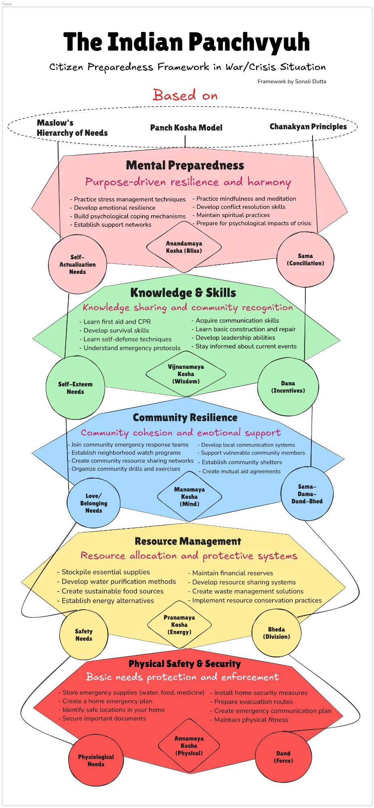

<!DOCTYPE html>
<html lang="en">
<head>
    <meta charset="UTF-8">
    <meta name="viewport" content="width=device-width, initial-scale=1.0">
    <title>The Indian Panchvyuh - Citizen Preparedness Assessment</title>
    <script src="https://cdnjs.cloudflare.com/ajax/libs/react/18.2.0/umd/react.production.min.js"></script>
    <script src="https://cdnjs.cloudflare.com/ajax/libs/react-dom/18.2.0/umd/react-dom.production.min.js"></script>
    <script src="https://cdnjs.cloudflare.com/ajax/libs/babel-standalone/7.23.5/babel.min.js"></script>
    <link href="https://fonts.googleapis.com/css2?family=Playfair+Display:wght@400;600;700;800&family=Source+Sans+3:wght@300;400;500;600;700&display=swap" rel="stylesheet">
    <style>
        :root {
            --saffron: #FF6B35;
            --saffron-dark: #E55A2B;
            --saffron-light: #FFE8DD;
            --green: #2D6A4F;
            --green-light: #40916C;
            --green-pale: #D8F3DC;
            --peacock: #1B4965;
            --peacock-light: #5FA8D3;
            --gold: #D4A373;
            --gold-light: #FEFAE0;
            --cream: #FFFCF2;
            --charcoal: #2D3436;
            --red: #C1121F;
            --red-light: #FFE5E5;
            --yellow: #F9C74F;
            --yellow-light: #FFF8E1;
            --blue: #4361EE;
            --blue-light: #E8EDFF;
            --level-1: #E63946;
            --level-2: #F4A261;
            --level-3: #90BE6D;
            --level-4: #43AA8B;
            --level-5: #577590;
        }

        * {
            margin: 0;
            padding: 0;
            box-sizing: border-box;
        }

        body {
            font-family: 'Source Sans 3', sans-serif;
            background: var(--cream);
            color: var(--charcoal);
            line-height: 1.6;
            min-height: 100vh;
        }

        .app-container {
            min-height: 100vh;
            background: linear-gradient(135deg, var(--cream) 0%, var(--gold-light) 50%, var(--saffron-light) 100%);
            position: relative;
            overflow-x: hidden;
        }

        .app-container::before {
            content: '';
            position: fixed;
            top: 0;
            left: 0;
            right: 0;
            bottom: 0;
            background-image: url("data:image/svg+xml,%3Csvg width='60' height='60' viewBox='0 0 60 60' xmlns='http://www.w3.org/2000/svg'%3E%3Cpath d='M30 5L35 25H55L39 35L45 55L30 42L15 55L21 35L5 25H25L30 5Z' fill='%23FF6B35' fill-opacity='0.03'/%3E%3C/svg%3E");
            pointer-events: none;
            z-index: 0;
        }

        .content-wrapper {
            position: relative;
            z-index: 1;
            max-width: 900px;
            margin: 0 auto;
            padding: 20px;
        }

        /* Header Styles */
        .header {
            text-align: center;
            padding: 40px 20px;
            position: relative;
        }

        .header::after {
            content: '';
            position: absolute;
            bottom: 0;
            left: 50%;
            transform: translateX(-50%);
            width: 200px;
            height: 4px;
            background: linear-gradient(90deg, var(--saffron), var(--green), var(--peacock));
            border-radius: 2px;
        }

        .title {
            font-family: 'Playfair Display', serif;
            font-size: 3rem;
            font-weight: 800;
            color: var(--peacock);
            margin-bottom: 10px;
            text-shadow: 2px 2px 4px rgba(0,0,0,0.1);
            letter-spacing: 1px;
        }

        .subtitle {
            font-size: 1.2rem;
            color: var(--green);
            font-weight: 500;
            margin-bottom: 8px;
        }

        .author {
            font-size: 0.9rem;
            color: var(--gold);
            font-style: italic;
        }

        /* Welcome Screen */
        .welcome-screen {
            background: white;
            border-radius: 24px;
            padding: 50px 40px;
            box-shadow: 0 20px 60px rgba(0,0,0,0.1);
            margin: 30px 0;
            text-align: center;
            animation: fadeInUp 0.8s ease-out;
        }

        @keyframes fadeInUp {
            from {
                opacity: 0;
                transform: translateY(30px);
            }
            to {
                opacity: 1;
                transform: translateY(0);
            }
        }

        .welcome-icon {
            width: 120px;
            height: 120px;
            margin: 0 auto 30px;
            background: linear-gradient(135deg, var(--saffron) 0%, var(--gold) 100%);
            border-radius: 50%;
            display: flex;
            align-items: center;
            justify-content: center;
            font-size: 60px;
            box-shadow: 0 10px 30px rgba(255, 107, 53, 0.3);
        }

        .welcome-title {
            font-family: 'Playfair Display', serif;
            font-size: 2rem;
            color: var(--peacock);
            margin-bottom: 20px;
        }

        .welcome-text {
            font-size: 1.1rem;
            color: #666;
            max-width: 600px;
            margin: 0 auto 30px;
            line-height: 1.8;
        }

        .framework-intro {
            background: var(--gold-light);
            border-radius: 16px;
            padding: 25px;
            margin: 30px 0;
            text-align: left;
        }

        .framework-intro h3 {
            font-family: 'Playfair Display', serif;
            color: var(--peacock);
            margin-bottom: 15px;
            font-size: 1.3rem;
        }

        .framework-pillars {
            display: grid;
            grid-template-columns: repeat(3, 1fr);
            gap: 15px;
            margin-top: 20px;
        }

        .pillar {
            background: white;
            padding: 15px;
            border-radius: 12px;
            text-align: center;
            box-shadow: 0 4px 15px rgba(0,0,0,0.05);
        }

        .pillar-icon {
            font-size: 2rem;
            margin-bottom: 8px;
        }

        .pillar-name {
            font-weight: 600;
            color: var(--peacock);
            font-size: 0.9rem;
        }

        .pillar-sub {
            font-size: 0.75rem;
            color: #888;
        }

        /* Buttons */
        .btn {
            display: inline-flex;
            align-items: center;
            justify-content: center;
            gap: 10px;
            padding: 16px 40px;
            font-size: 1.1rem;
            font-weight: 600;
            border: none;
            border-radius: 50px;
            cursor: pointer;
            transition: all 0.3s ease;
            font-family: 'Source Sans 3', sans-serif;
        }

        .btn-primary {
            background: linear-gradient(135deg, var(--saffron) 0%, var(--saffron-dark) 100%);
            color: white;
            box-shadow: 0 8px 25px rgba(255, 107, 53, 0.4);
        }

        .btn-primary:hover {
            transform: translateY(-3px);
            box-shadow: 0 12px 35px rgba(255, 107, 53, 0.5);
        }

        .btn-secondary {
            background: white;
            color: var(--peacock);
            border: 2px solid var(--peacock);
        }

        .btn-secondary:hover {
            background: var(--peacock);
            color: white;
        }

        .btn-outline {
            background: transparent;
            color: var(--saffron);
            border: 2px solid var(--saffron);
        }

        .btn-outline:hover {
            background: var(--saffron);
            color: white;
        }

        /* Progress Bar */
        .progress-container {
            background: white;
            border-radius: 16px;
            padding: 20px 25px;
            margin: 20px 0;
            box-shadow: 0 8px 30px rgba(0,0,0,0.08);
        }

        .progress-header {
            display: flex;
            justify-content: space-between;
            align-items: center;
            margin-bottom: 15px;
        }

        .progress-level {
            font-family: 'Playfair Display', serif;
            font-size: 1.1rem;
            color: var(--peacock);
        }

        .progress-count {
            font-size: 0.9rem;
            color: #888;
        }

        .progress-bar-outer {
            height: 10px;
            background: #E8E8E8;
            border-radius: 5px;
            overflow: hidden;
        }

        .progress-bar-inner {
            height: 100%;
            border-radius: 5px;
            transition: width 0.5s ease, background 0.3s ease;
        }

        .progress-levels {
            display: flex;
            justify-content: space-between;
            margin-top: 15px;
        }

        .progress-level-dot {
            display: flex;
            flex-direction: column;
            align-items: center;
            gap: 5px;
        }

        .dot {
            width: 24px;
            height: 24px;
            border-radius: 50%;
            display: flex;
            align-items: center;
            justify-content: center;
            font-size: 0.7rem;
            font-weight: 600;
            transition: all 0.3s ease;
        }

        .dot.completed {
            color: white;
        }

        .dot.current {
            transform: scale(1.2);
            box-shadow: 0 4px 15px rgba(0,0,0,0.2);
        }

        .dot.pending {
            background: #E8E8E8;
            color: #999;
        }

        .level-label {
            font-size: 0.65rem;
            color: #888;
            max-width: 60px;
            text-align: center;
            line-height: 1.2;
        }

        /* Question Card */
        .question-screen {
            animation: fadeInUp 0.6s ease-out;
        }

        .level-header {
            background: white;
            border-radius: 20px;
            padding: 30px;
            margin-bottom: 20px;
            box-shadow: 0 10px 40px rgba(0,0,0,0.1);
            position: relative;
            overflow: hidden;
        }

        .level-header::before {
            content: '';
            position: absolute;
            top: 0;
            left: 0;
            right: 0;
            height: 6px;
        }

        .level-header.level-1::before { background: var(--level-1); }
        .level-header.level-2::before { background: var(--level-2); }
        .level-header.level-3::before { background: var(--level-3); }
        .level-header.level-4::before { background: var(--level-4); }
        .level-header.level-5::before { background: var(--level-5); }

        .level-info {
            display: flex;
            gap: 20px;
            align-items: flex-start;
        }

        .level-icon {
            width: 70px;
            height: 70px;
            border-radius: 16px;
            display: flex;
            align-items: center;
            justify-content: center;
            font-size: 2rem;
            flex-shrink: 0;
        }

        .level-1 .level-icon { background: linear-gradient(135deg, var(--level-1), #FF6B6B); }
        .level-2 .level-icon { background: linear-gradient(135deg, var(--level-2), #F9C74F); }
        .level-3 .level-icon { background: linear-gradient(135deg, var(--level-3), #52B788); }
        .level-4 .level-icon { background: linear-gradient(135deg, var(--level-4), #48BFE3); }
        .level-5 .level-icon { background: linear-gradient(135deg, var(--level-5), #7B68EE); }

        .level-details h2 {
            font-family: 'Playfair Display', serif;
            font-size: 1.6rem;
            color: var(--charcoal);
            margin-bottom: 5px;
        }

        .level-details .tagline {
            font-size: 1rem;
            font-style: italic;
            margin-bottom: 10px;
        }

        .level-1 .tagline { color: var(--level-1); }
        .level-2 .tagline { color: var(--level-2); }
        .level-3 .tagline { color: var(--level-3); }
        .level-4 .tagline { color: var(--level-4); }
        .level-5 .tagline { color: var(--level-5); }

        .level-frameworks {
            display: flex;
            gap: 15px;
            flex-wrap: wrap;
        }

        .framework-tag {
            display: inline-flex;
            align-items: center;
            gap: 5px;
            padding: 5px 12px;
            background: var(--gold-light);
            border-radius: 20px;
            font-size: 0.8rem;
            color: var(--peacock);
        }

        .question-card {
            background: white;
            border-radius: 20px;
            padding: 35px;
            margin-bottom: 20px;
            box-shadow: 0 10px 40px rgba(0,0,0,0.1);
            animation: slideIn 0.5s ease-out;
        }

        @keyframes slideIn {
            from {
                opacity: 0;
                transform: translateX(30px);
            }
            to {
                opacity: 1;
                transform: translateX(0);
            }
        }

        .question-number {
            font-size: 0.85rem;
            color: #888;
            margin-bottom: 10px;
            font-weight: 500;
        }

        .question-text {
            font-family: 'Playfair Display', serif;
            font-size: 1.4rem;
            color: var(--charcoal);
            line-height: 1.6;
            margin-bottom: 25px;
        }

        .options-container {
            display: flex;
            flex-direction: column;
            gap: 12px;
        }

        .option {
            display: flex;
            align-items: flex-start;
            gap: 15px;
            padding: 18px 20px;
            background: #F8F9FA;
            border: 2px solid transparent;
            border-radius: 14px;
            cursor: pointer;
            transition: all 0.3s ease;
        }

        .option:hover {
            background: var(--gold-light);
            border-color: var(--gold);
            transform: translateX(5px);
        }

        .option.selected {
            background: var(--saffron-light);
            border-color: var(--saffron);
        }

        .option-radio {
            width: 24px;
            height: 24px;
            border: 2px solid #CCC;
            border-radius: 50%;
            display: flex;
            align-items: center;
            justify-content: center;
            flex-shrink: 0;
            transition: all 0.3s ease;
        }

        .option.selected .option-radio {
            border-color: var(--saffron);
            background: var(--saffron);
        }

        .option.selected .option-radio::after {
            content: '✓';
            color: white;
            font-size: 14px;
            font-weight: bold;
        }

        .option-content {
            flex: 1;
        }

        .option-label {
            font-weight: 600;
            color: var(--charcoal);
            margin-bottom: 4px;
        }

        .option-description {
            font-size: 0.9rem;
            color: #666;
            line-height: 1.5;
        }

        .navigation-buttons {
            display: flex;
            justify-content: space-between;
            gap: 15px;
            margin-top: 20px;
        }

        /* Results Screen */
        .results-screen {
            animation: fadeInUp 0.8s ease-out;
        }

        .results-header {
            background: linear-gradient(135deg, var(--peacock) 0%, var(--green) 100%);
            border-radius: 24px;
            padding: 40px;
            color: white;
            text-align: center;
            margin-bottom: 30px;
            position: relative;
            overflow: hidden;
        }

        .results-header::before {
            content: '';
            position: absolute;
            top: -50%;
            left: -50%;
            width: 200%;
            height: 200%;
            background: radial-gradient(circle, rgba(255,255,255,0.1) 0%, transparent 60%);
            animation: shimmer 3s linear infinite;
        }

        @keyframes shimmer {
            0% { transform: rotate(0deg); }
            100% { transform: rotate(360deg); }
        }

        .overall-score {
            position: relative;
            z-index: 1;
        }

        .score-circle {
            width: 160px;
            height: 160px;
            margin: 0 auto 20px;
            position: relative;
        }

        .score-circle svg {
            transform: rotate(-90deg);
        }

        .score-bg {
            fill: none;
            stroke: rgba(255,255,255,0.2);
            stroke-width: 12;
        }

        .score-fill {
            fill: none;
            stroke: var(--gold);
            stroke-width: 12;
            stroke-linecap: round;
            transition: stroke-dashoffset 1.5s ease-out;
        }

        .score-text {
            position: absolute;
            top: 50%;
            left: 50%;
            transform: translate(-50%, -50%);
            text-align: center;
        }

        .score-value {
            font-family: 'Playfair Display', serif;
            font-size: 3rem;
            font-weight: 800;
        }

        .score-label {
            font-size: 0.9rem;
            opacity: 0.9;
        }

        .readiness-level {
            font-family: 'Playfair Display', serif;
            font-size: 1.8rem;
            margin-bottom: 10px;
        }

        .readiness-message {
            font-size: 1.1rem;
            opacity: 0.9;
            max-width: 500px;
            margin: 0 auto;
        }

        /* Panchvyuh Visualization */
        .panchvyuh-viz {
            background: white;
            border-radius: 24px;
            padding: 40px;
            margin-bottom: 30px;
            box-shadow: 0 15px 50px rgba(0,0,0,0.1);
        }

        .viz-title {
            font-family: 'Playfair Display', serif;
            font-size: 1.5rem;
            color: var(--peacock);
            text-align: center;
            margin-bottom: 30px;
        }

        .pyramid-container {
            max-width: 600px;
            margin: 0 auto;
        }

        .pyramid-level {
            display: flex;
            align-items: center;
            margin-bottom: 8px;
            transition: all 0.3s ease;
        }

        .pyramid-level:hover {
            transform: scale(1.02);
        }

        .pyramid-shape {
            position: relative;
            height: 60px;
            display: flex;
            align-items: center;
            justify-content: center;
            color: white;
            font-weight: 600;
            clip-path: polygon(10% 0%, 90% 0%, 100% 100%, 0% 100%);
            transition: all 0.5s ease;
        }

        .pyramid-shape.level-5 {
            width: 50%;
            margin-left: 25%;
            clip-path: polygon(25% 0%, 75% 0%, 100% 100%, 0% 100%);
        }

        .pyramid-shape.level-4 { width: 65%; margin-left: 17.5%; }
        .pyramid-shape.level-3 { width: 78%; margin-left: 11%; }
        .pyramid-shape.level-2 { width: 90%; margin-left: 5%; }
        .pyramid-shape.level-1 { width: 100%; margin-left: 0; clip-path: polygon(5% 0%, 95% 0%, 100% 100%, 0% 100%); }

        .pyramid-shape.bg-1 { background: linear-gradient(135deg, var(--level-1), #FF6B6B); }
        .pyramid-shape.bg-2 { background: linear-gradient(135deg, var(--level-2), #F9C74F); }
        .pyramid-shape.bg-3 { background: linear-gradient(135deg, var(--level-3), #52B788); }
        .pyramid-shape.bg-4 { background: linear-gradient(135deg, var(--level-4), #48BFE3); }
        .pyramid-shape.bg-5 { background: linear-gradient(135deg, var(--level-5), #7B68EE); }

        .pyramid-shape.low { opacity: 0.4; }
        .pyramid-shape.medium { opacity: 0.7; }
        .pyramid-shape.high { opacity: 1; }

        .pyramid-label {
            font-size: 0.85rem;
            text-shadow: 1px 1px 2px rgba(0,0,0,0.3);
        }

        .pyramid-score {
            position: absolute;
            right: -60px;
            background: white;
            color: var(--charcoal);
            padding: 5px 12px;
            border-radius: 20px;
            font-size: 0.85rem;
            font-weight: 700;
            box-shadow: 0 3px 10px rgba(0,0,0,0.1);
        }

        /* Level Results Cards */
        .level-results {
            display: flex;
            flex-direction: column;
            gap: 20px;
            margin-bottom: 30px;
        }

        .level-result-card {
            background: white;
            border-radius: 20px;
            padding: 25px;
            box-shadow: 0 8px 30px rgba(0,0,0,0.08);
            border-left: 5px solid;
            transition: transform 0.3s ease;
        }

        .level-result-card:hover {
            transform: translateY(-5px);
        }

        .level-result-card.priority-high { border-color: var(--red); }
        .level-result-card.priority-medium { border-color: var(--yellow); }
        .level-result-card.priority-low { border-color: var(--green); }

        .level-result-header {
            display: flex;
            justify-content: space-between;
            align-items: center;
            margin-bottom: 15px;
        }

        .level-result-title {
            font-family: 'Playfair Display', serif;
            font-size: 1.2rem;
            color: var(--charcoal);
        }

        .level-score-badge {
            padding: 6px 14px;
            border-radius: 20px;
            font-weight: 600;
            font-size: 0.9rem;
        }

        .level-score-badge.low {
            background: var(--red-light);
            color: var(--red);
        }

        .level-score-badge.medium {
            background: var(--yellow-light);
            color: #B8860B;
        }

        .level-score-badge.high {
            background: var(--green-pale);
            color: var(--green);
        }

        .progress-mini {
            height: 8px;
            background: #E8E8E8;
            border-radius: 4px;
            overflow: hidden;
            margin-bottom: 15px;
        }

        .progress-mini-fill {
            height: 100%;
            border-radius: 4px;
            transition: width 1s ease;
        }

        .action-items {
            margin-top: 15px;
        }

        .action-items-title {
            font-weight: 600;
            color: var(--peacock);
            margin-bottom: 10px;
            font-size: 0.95rem;
        }

        .action-item {
            display: flex;
            align-items: flex-start;
            gap: 10px;
            padding: 10px 0;
            border-bottom: 1px solid #F0F0F0;
        }

        .action-item:last-child {
            border-bottom: none;
        }

        .action-icon {
            width: 24px;
            height: 24px;
            border-radius: 50%;
            display: flex;
            align-items: center;
            justify-content: center;
            font-size: 0.8rem;
            flex-shrink: 0;
        }

        .action-icon.urgent {
            background: var(--red-light);
            color: var(--red);
        }

        .action-icon.important {
            background: var(--yellow-light);
            color: #B8860B;
        }

        .action-icon.good {
            background: var(--green-pale);
            color: var(--green);
        }

        .action-text {
            font-size: 0.95rem;
            color: #555;
            line-height: 1.5;
        }

        /* Save/Share Section */
        .results-actions {
            background: white;
            border-radius: 20px;
            padding: 30px;
            text-align: center;
            box-shadow: 0 8px 30px rgba(0,0,0,0.08);
        }

        .results-actions h3 {
            font-family: 'Playfair Display', serif;
            color: var(--peacock);
            margin-bottom: 20px;
        }

        .action-buttons {
            display: flex;
            justify-content: center;
            gap: 15px;
            flex-wrap: wrap;
        }

        .saved-indicator {
            display: flex;
            align-items: center;
            justify-content: center;
            gap: 8px;
            margin-top: 15px;
            color: var(--green);
            font-weight: 500;
        }

        /* History Screen */
        .history-screen {
            animation: fadeInUp 0.6s ease-out;
        }

        .history-card {
            background: white;
            border-radius: 20px;
            padding: 25px;
            margin-bottom: 15px;
            box-shadow: 0 8px 30px rgba(0,0,0,0.08);
            cursor: pointer;
            transition: all 0.3s ease;
        }

        .history-card:hover {
            transform: translateY(-3px);
            box-shadow: 0 12px 40px rgba(0,0,0,0.12);
        }

        .history-header {
            display: flex;
            justify-content: space-between;
            align-items: center;
            margin-bottom: 15px;
        }

        .history-date {
            font-size: 0.9rem;
            color: #888;
        }

        .history-score {
            font-family: 'Playfair Display', serif;
            font-size: 1.8rem;
            font-weight: 700;
            color: var(--peacock);
        }

        .history-bars {
            display: flex;
            gap: 8px;
            height: 40px;
            align-items: flex-end;
        }

        .history-bar {
            flex: 1;
            border-radius: 4px 4px 0 0;
            transition: height 0.5s ease;
        }

        /* Quote */
        .quote-section {
            text-align: center;
            padding: 40px 20px;
            margin-top: 30px;
        }

        .quote-text {
            font-family: 'Playfair Display', serif;
            font-size: 1.4rem;
            font-style: italic;
            color: var(--peacock);
            max-width: 600px;
            margin: 0 auto 15px;
        }

        .quote-author {
            color: var(--saffron);
            font-weight: 600;
        }

        /* Framework Modal */
        .framework-modal-overlay {
            position: fixed;
            top: 0;
            left: 0;
            right: 0;
            bottom: 0;
            background: rgba(0, 0, 0, 0.85);
            z-index: 1000;
            display: flex;
            align-items: center;
            justify-content: center;
            padding: 20px;
            animation: fadeIn 0.3s ease;
        }

        @keyframes fadeIn {
            from { opacity: 0; }
            to { opacity: 1; }
        }

        .framework-modal {
            background: white;
            border-radius: 20px;
            max-width: 700px;
            max-height: 90vh;
            overflow: hidden;
            position: relative;
            animation: scaleIn 0.3s ease;
        }

        @keyframes scaleIn {
            from { transform: scale(0.9); opacity: 0; }
            to { transform: scale(1); opacity: 1; }
        }

        .framework-modal-header {
            background: linear-gradient(135deg, var(--peacock) 0%, var(--green) 100%);
            color: white;
            padding: 20px 25px;
            display: flex;
            justify-content: space-between;
            align-items: center;
        }

        .framework-modal-header h3 {
            font-family: 'Playfair Display', serif;
            font-size: 1.3rem;
            margin: 0;
        }

        .close-btn {
            background: rgba(255,255,255,0.2);
            border: none;
            color: white;
            width: 36px;
            height: 36px;
            border-radius: 50%;
            font-size: 1.2rem;
            cursor: pointer;
            transition: all 0.3s ease;
            display: flex;
            align-items: center;
            justify-content: center;
        }

        .close-btn:hover {
            background: rgba(255,255,255,0.3);
            transform: rotate(90deg);
        }

        .framework-modal-body {
            padding: 20px;
            max-height: calc(90vh - 80px);
            overflow-y: auto;
        }

        .framework-image {
            width: 100%;
            height: auto;
            border-radius: 12px;
            box-shadow: 0 5px 20px rgba(0,0,0,0.1);
        }

        .view-framework-btn {
            display: inline-flex;
            align-items: center;
            gap: 8px;
            padding: 12px 24px;
            background: linear-gradient(135deg, var(--peacock) 0%, var(--green) 100%);
            color: white;
            border: none;
            border-radius: 30px;
            font-size: 1rem;
            font-weight: 600;
            cursor: pointer;
            transition: all 0.3s ease;
            margin-top: 20px;
            font-family: 'Source Sans 3', sans-serif;
        }

        .view-framework-btn:hover {
            transform: translateY(-2px);
            box-shadow: 0 8px 25px rgba(27, 73, 101, 0.4);
        }

        /* Framework section in results */
        .framework-reference {
            background: white;
            border-radius: 20px;
            padding: 30px;
            margin-bottom: 30px;
            box-shadow: 0 8px 30px rgba(0,0,0,0.08);
            text-align: center;
        }

        .framework-reference h3 {
            font-family: 'Playfair Display', serif;
            color: var(--peacock);
            margin-bottom: 15px;
        }

        .framework-reference p {
            color: #666;
            margin-bottom: 20px;
        }

        .framework-thumb {
            width: 100%;
            max-width: 500px;
            border-radius: 12px;
            box-shadow: 0 5px 20px rgba(0,0,0,0.1);
            cursor: pointer;
            transition: transform 0.3s ease;
        }

        .framework-thumb:hover {
            transform: scale(1.02);
        }

        /* Footer */
        .footer {
            text-align: center;
            padding: 30px;
            color: #888;
            font-size: 0.9rem;
        }

        .footer-brand {
            font-family: 'Playfair Display', serif;
            color: var(--peacock);
            font-size: 1.1rem;
            margin-bottom: 5px;
        }

        /* Responsive */
        @media (max-width: 768px) {
            .title { font-size: 2rem; }
            .framework-pillars { grid-template-columns: 1fr; }
            .level-info { flex-direction: column; }
            .question-text { font-size: 1.2rem; }
            .welcome-screen, .question-card, .results-header { padding: 25px 20px; }
            .pyramid-score { position: static; margin-top: 5px; }
            .pyramid-level { flex-direction: column; align-items: stretch; }
        }
    </style>
</head>
<body>
    <div id="root"></div>
    
    <script type="text/babel">
        const { useState, useEffect, useCallback } = React;

        // Framework Data
        const LEVELS = [
            {
                id: 1,
                name: "Physical Safety & Security",
                tagline: "Basic needs protection and enforcement",
                icon: "🛡️",
                kosha: "Annamaya Kosha (Physical)",
                maslow: "Physiological Needs",
                chanakya: "Dand (Force)",
                color: "#E63946"
            },
            {
                id: 2,
                name: "Resource Management",
                tagline: "Resource allocation and protective systems",
                icon: "📦",
                kosha: "Pranamaya Kosha (Energy)",
                maslow: "Safety Needs",
                chanakya: "Bheda (Division)",
                color: "#F4A261"
            },
            {
                id: 3,
                name: "Community Resilience",
                tagline: "Community cohesion and emotional support",
                icon: "🤝",
                kosha: "Manomaya Kosha (Mind)",
                maslow: "Love/Belonging Needs",
                chanakya: "Sama-Dama-Dand-Bhed",
                color: "#90BE6D"
            },
            {
                id: 4,
                name: "Knowledge & Skills",
                tagline: "Knowledge sharing and community recognition",
                icon: "📚",
                kosha: "Vijnanamaya Kosha (Wisdom)",
                maslow: "Self-Esteem Needs",
                chanakya: "Dana (Incentives)",
                color: "#43AA8B"
            },
            {
                id: 5,
                name: "Mental Preparedness",
                tagline: "Purpose-driven resilience and harmony",
                icon: "🧘",
                kosha: "Anandamaya Kosha (Bliss)",
                maslow: "Self-Actualization Needs",
                chanakya: "Sama (Conciliation)",
                color: "#577590"
            }
        ];

        // Deep psychological questions for each level
        const QUESTIONS = {
            1: [
                {
                    id: "1-1",
                    text: "When you imagine a sudden crisis disrupting your city tonight, what is the first resource you instinctively think about securing?",
                    options: [
                        { value: 4, label: "I have a prepared emergency kit", description: "I've already prepared supplies for at least 72 hours including water, food, medicines, and documents." },
                        { value: 3, label: "I know exactly what to grab", description: "I have a mental checklist and know where essentials are, though not pre-packed." },
                        { value: 2, label: "I'd need time to think", description: "I'd figure it out but would need to gather things from different places." },
                        { value: 1, label: "I haven't thought about this", description: "This scenario catches me unprepared; I'd have to start from scratch." }
                    ]
                },
                {
                    id: "1-2",
                    text: "If all exits from your home were blocked except one unfamiliar route, how confident are you in finding safety?",
                    options: [
                        { value: 4, label: "Multiple escape routes mapped", description: "I've identified and practiced at least 3 different evacuation routes from my home." },
                        { value: 3, label: "One solid backup plan", description: "I have one alternative exit strategy beyond the main door." },
                        { value: 2, label: "General awareness only", description: "I know my building layout but haven't specifically planned escape routes." },
                        { value: 1, label: "Never considered this", description: "I've only used the main entrance and never thought about alternatives." }
                    ]
                },
                {
                    id: "1-3",
                    text: "Your body is your first line of defense. How would you honestly assess your physical readiness for a crisis requiring sustained effort?",
                    options: [
                        { value: 4, label: "Trained and capable", description: "I maintain fitness, know basic self-defense, and can handle physical demands for extended periods." },
                        { value: 3, label: "Reasonably fit", description: "I exercise regularly and could manage moderate physical challenges." },
                        { value: 2, label: "Basic capability", description: "I'm not very active but could push through if absolutely necessary." },
                        { value: 1, label: "Physically unprepared", description: "My current physical condition would be a significant limitation." }
                    ]
                },
                {
                    id: "1-4",
                    text: "Important documents can mean the difference between rebuilding quickly or starting over. Where are yours?",
                    options: [
                        { value: 4, label: "Secured and backed up", description: "Physical copies in waterproof container, digital copies in cloud, and trusted person has duplicates." },
                        { value: 3, label: "Organized but not secured", description: "I know where everything is and have some digital backups." },
                        { value: 2, label: "Scattered but findable", description: "Documents are in different places but I could eventually locate them." },
                        { value: 1, label: "Disorganized", description: "I'd struggle to quickly locate important documents in an emergency." }
                    ]
                }
            ],
            2: [
                {
                    id: "2-1",
                    text: "If water supply to your area stopped today, how many days could your household sustain itself?",
                    options: [
                        { value: 4, label: "2+ weeks prepared", description: "I store water systematically and know purification methods (boiling, filters, tablets)." },
                        { value: 3, label: "About a week", description: "I keep some water stored and have basic knowledge of making water safe." },
                        { value: 2, label: "2-3 days maximum", description: "I might have some bottled water but no systematic preparation." },
                        { value: 1, label: "Less than a day", description: "I rely entirely on daily water supply with no reserves." }
                    ]
                },
                {
                    id: "2-2",
                    text: "Financial resilience acts as a buffer during chaos. How would you describe your emergency financial preparedness?",
                    options: [
                        { value: 4, label: "Diversified and accessible", description: "Emergency fund in multiple forms (cash at home, bank, investments) covering 6+ months of expenses." },
                        { value: 3, label: "Solid emergency fund", description: "I have 3-6 months of expenses saved and accessible." },
                        { value: 2, label: "Some savings", description: "I have some money saved but it wouldn't last long in a prolonged crisis." },
                        { value: 1, label: "Living month to month", description: "A financial emergency would immediately create hardship." }
                    ]
                },
                {
                    id: "2-3",
                    text: "When supply chains break, food becomes currency. What's your household's food security strategy?",
                    options: [
                        { value: 4, label: "Strategic stockpile", description: "I maintain rotating stock of non-perishables, know food preservation, and have some growing capability." },
                        { value: 3, label: "Well-stocked pantry", description: "I typically have 2-4 weeks of food and buy extras of essentials." },
                        { value: 2, label: "Week's worth usually", description: "Normal grocery shopping keeps about a week's food in the house." },
                        { value: 1, label: "Day-to-day shopping", description: "I buy food as needed with minimal reserves at home." }
                    ]
                },
                {
                    id: "2-4",
                    text: "Power grids fail during crises. How prepared are you for life without electricity?",
                    options: [
                        { value: 4, label: "Multiple alternatives ready", description: "I have backup power options (inverter/generator/solar), know manual alternatives for essential tasks." },
                        { value: 3, label: "Basic backup exists", description: "I have some battery backups, torches, and can manage short outages well." },
                        { value: 2, label: "Minimal preparation", description: "I have a few candles and a charged phone, would struggle with prolonged outage." },
                        { value: 1, label: "Fully dependent on grid", description: "A power cut significantly disrupts my daily functioning." }
                    ]
                }
            ],
            3: [
                {
                    id: "3-1",
                    text: "In a crisis, isolated individuals are vulnerable. How strong is your network of people who would genuinely help you?",
                    options: [
                        { value: 4, label: "Strong mutual aid network", description: "I have deep relationships with neighbors, friends, and family who would act for each other." },
                        { value: 3, label: "Reliable core group", description: "I have 3-5 people I could absolutely count on and who count on me." },
                        { value: 2, label: "Acquaintances mostly", description: "I know people but haven't built deep enough trust for crisis support." },
                        { value: 1, label: "Largely isolated", description: "I don't have strong community connections I could rely on." }
                    ]
                },
                {
                    id: "3-2",
                    text: "When phone networks fail, how would you communicate with your loved ones and coordinate safety?",
                    options: [
                        { value: 4, label: "Multiple backup systems", description: "We have pre-decided meeting points, offline communication methods, and emergency protocols." },
                        { value: 3, label: "Basic plan exists", description: "Family knows general emergency plan and we have a meeting point decided." },
                        { value: 2, label: "Would improvise", description: "We'd figure it out but haven't discussed specific protocols." },
                        { value: 1, label: "No plan", description: "We've never discussed how to find each other if normal communication fails." }
                    ]
                },
                {
                    id: "3-3",
                    text: "Communities survive crises better than individuals. How connected are you to your local community's resilience efforts?",
                    options: [
                        { value: 4, label: "Actively involved", description: "I participate in local emergency response teams, neighborhood watch, or community organizations." },
                        { value: 3, label: "Connected but passive", description: "I know about local community groups and have some participation." },
                        { value: 2, label: "Aware but not involved", description: "I know such groups exist but haven't engaged with them." },
                        { value: 1, label: "No community connection", description: "I don't know about or participate in any local community efforts." }
                    ]
                },
                {
                    id: "3-4",
                    text: "Vulnerable members of a community need extra support. Do you know who around you might need help, and are you prepared to offer it?",
                    options: [
                        { value: 4, label: "Mapped and committed", description: "I know elderly, disabled, or vulnerable neighbors and have discussed mutual support." },
                        { value: 3, label: "Generally aware", description: "I know some vulnerable people nearby and would help if needed." },
                        { value: 2, label: "Would help if asked", description: "I haven't specifically identified anyone but would respond to obvious need." },
                        { value: 1, label: "Focused on own family", description: "In a crisis, I'd prioritize only my immediate family's needs." }
                    ]
                }
            ],
            4: [
                {
                    id: "4-1",
                    text: "Medical emergencies don't wait for doctors. How capable are you of handling injuries or health crises yourself?",
                    options: [
                        { value: 4, label: "Formally trained", description: "I've taken first aid/CPR courses, have supplies, and have practiced these skills." },
                        { value: 3, label: "Basic knowledge", description: "I know fundamental first aid and have a basic kit at home." },
                        { value: 2, label: "Would search online", description: "I'd need to look up what to do for most medical situations." },
                        { value: 1, label: "No medical knowledge", description: "I wouldn't know how to handle even basic injuries effectively." }
                    ]
                },
                {
                    id: "4-2",
                    text: "Information becomes weapon and shield during conflicts. How do you ensure you're getting accurate information?",
                    options: [
                        { value: 4, label: "Verified sources only", description: "I cross-reference multiple credible sources, know official channels, and can spot misinformation." },
                        { value: 3, label: "Careful consumption", description: "I try to verify important news and don't share unconfirmed information." },
                        { value: 2, label: "Somewhat careful", description: "I generally trust mainstream sources but don't actively verify." },
                        { value: 1, label: "Passive consumer", description: "I tend to accept and share information without much verification." }
                    ]
                },
                {
                    id: "4-3",
                    text: "Practical skills become invaluable when services collapse. Beyond your profession, what survival-relevant skills do you possess?",
                    options: [
                        { value: 4, label: "Multiple practical skills", description: "I can do basic repairs, cook without modern appliances, navigate without GPS, and more." },
                        { value: 3, label: "Some useful skills", description: "I have a few practical abilities that would be helpful in emergencies." },
                        { value: 2, label: "Mostly theoretical", description: "I understand concepts but lack hands-on experience in practical survival skills." },
                        { value: 1, label: "Highly dependent on services", description: "I rely on professionals and technology for most practical needs." }
                    ]
                },
                {
                    id: "4-4",
                    text: "Leadership emerges in crisis. How prepared are you to guide others or take charge of a difficult situation?",
                    options: [
                        { value: 4, label: "Ready to lead", description: "I've led in difficult situations, remain calm under pressure, and people look to me for direction." },
                        { value: 3, label: "Can step up", description: "I'm not naturally a leader but can take charge when necessary." },
                        { value: 2, label: "Prefer to follow", description: "I work better following clear instructions from someone else." },
                        { value: 1, label: "Avoid responsibility", description: "I tend to freeze or defer to anyone else in stressful situations." }
                    ]
                }
            ],
            5: [
                {
                    id: "5-1",
                    text: "Crisis reveals character. When faced with extreme stress, how do you typically respond emotionally?",
                    options: [
                        { value: 4, label: "Trained resilience", description: "I practice stress management, have faced difficulties before, and can maintain clarity under pressure." },
                        { value: 3, label: "Generally stable", description: "I may feel stress but can usually manage my emotions and function." },
                        { value: 2, label: "Struggle but cope", description: "I get overwhelmed but eventually find my footing." },
                        { value: 1, label: "Highly reactive", description: "Strong stress tends to paralyze me or cause panic." }
                    ]
                },
                {
                    id: "5-2",
                    text: "Purpose anchors us in chaos. What deeper meaning or responsibility would keep you going through prolonged hardship?",
                    options: [
                        { value: 4, label: "Clear dharma/purpose", description: "I have strong sense of duty, values, or spiritual foundation that guides me through anything." },
                        { value: 3, label: "Family/responsibility focused", description: "My loved ones and responsibilities give me reason to persevere." },
                        { value: 2, label: "Survival instinct", description: "I'd push through mainly on the will to survive, though it might be hard." },
                        { value: 1, label: "Uncertain", description: "I'm not sure what would sustain me through truly hard times." }
                    ]
                },
                {
                    id: "5-3",
                    text: "Conflict often demands impossible choices. How have you prepared yourself to make difficult ethical decisions under pressure?",
                    options: [
                        { value: 4, label: "Values are clear", description: "I've reflected deeply on my principles and know what lines I won't cross, even in crisis." },
                        { value: 3, label: "General framework", description: "I have values that guide me though haven't stress-tested them mentally." },
                        { value: 2, label: "Situational judgment", description: "I'd decide based on the situation without predetermined principles." },
                        { value: 1, label: "Haven't considered this", description: "I've never thought about how I'd handle moral dilemmas in crisis." }
                    ]
                },
                {
                    id: "5-4",
                    text: "Recovery requires hope. Even imagining the worst, can you envision yourself and your community rebuilding?",
                    options: [
                        { value: 4, label: "Resilient optimism", description: "I believe strongly in human capacity to recover and see myself as part of rebuilding." },
                        { value: 3, label: "Cautious hope", description: "I think we'd find a way forward, though it would be difficult." },
                        { value: 2, label: "Uncertain about recovery", description: "I worry about whether things could ever return to normal." },
                        { value: 1, label: "Pessimistic outlook", description: "I fear a major crisis would permanently damage our society and my life." }
                    ]
                }
            ]
        };

        // Action items based on score levels
        const ACTION_ITEMS = {
            1: {
                low: [
                    "Immediately create a 72-hour emergency kit with water, non-perishable food, first aid supplies, flashlight, and batteries",
                    "Identify and practice at least two evacuation routes from your home",
                    "Store important documents in waterproof container and create digital backups",
                    "Begin a basic fitness routine - even 15 minutes daily walking improves crisis readiness"
                ],
                medium: [
                    "Upgrade your emergency supplies to cover 7 days",
                    "Install basic home security measures and identify safe rooms",
                    "Create digital backup of all important documents in cloud storage",
                    "Learn basic self-defense techniques through online resources or local classes"
                ],
                high: [
                    "Consider advanced security measures for your home",
                    "Teach family members evacuation routes and conduct practice drills",
                    "Keep emergency cash in small denominations at home",
                    "Maintain your fitness level and consider learning martial arts"
                ]
            },
            2: {
                low: [
                    "Start storing water immediately - aim for 4 liters per person per day for 3 days minimum",
                    "Build emergency fund - start with even ₹500/month into a separate account",
                    "Stock one week of non-perishable food your family actually eats",
                    "Purchase a basic inverter or power bank for essential devices"
                ],
                medium: [
                    "Learn water purification methods - boiling, chlorination, filtration",
                    "Increase emergency fund to 3 months of expenses",
                    "Create a rotating food storage system - first in, first out",
                    "Explore solar charging options for devices"
                ],
                high: [
                    "Install rainwater harvesting or water storage tank if possible",
                    "Diversify savings across cash, bank, and portable valuables",
                    "Learn food preservation techniques - drying, pickling, fermentation",
                    "Consider backup power solutions for critical home systems"
                ]
            },
            3: {
                low: [
                    "Introduce yourself to at least 5 neighbors this month",
                    "Create a family emergency communication plan with meeting points",
                    "Join your local Resident Welfare Association or community group",
                    "Identify elderly or vulnerable neighbors who might need support"
                ],
                medium: [
                    "Form a small mutual aid group with 3-5 trusted neighbors or friends",
                    "Establish offline communication methods - decide on meeting points and times",
                    "Participate actively in community events and initiatives",
                    "Create a contact list with addresses of key people (for when phones don't work)"
                ],
                high: [
                    "Consider joining or forming a Community Emergency Response Team (CERT)",
                    "Help organize community preparedness drills",
                    "Build resource-sharing agreements with neighbors",
                    "Mentor others in preparedness within your community"
                ]
            },
            4: {
                low: [
                    "Take a basic first aid and CPR course - many are available online free",
                    "Learn to identify fake news - follow fact-checking organizations",
                    "Start learning one practical skill - basic cooking, repair, or navigation",
                    "Download offline maps of your city and practice reading them"
                ],
                medium: [
                    "Get certified in first aid from Red Cross or St. John Ambulance",
                    "Create a personal information verification checklist before sharing news",
                    "Learn basic home repair, cooking without electricity, and water purification",
                    "Practice leadership skills by taking charge of small group activities"
                ],
                high: [
                    "Consider advanced training - wilderness first aid, amateur radio license",
                    "Become a source of reliable information in your community",
                    "Teach practical skills to family and community members",
                    "Develop crisis leadership capabilities through training or practice"
                ]
            },
            5: {
                low: [
                    "Start a daily mindfulness or meditation practice - even 5 minutes helps",
                    "Reflect on what gives your life meaning - write it down",
                    "Read about how others have survived crises - build mental models",
                    "Talk to a counselor or trusted person about anxiety around difficult scenarios"
                ],
                medium: [
                    "Develop regular stress management practices - yoga, pranayama, exercise",
                    "Clarify your personal values and how they would guide difficult decisions",
                    "Build a support network for emotional resilience - friends, family, community",
                    "Practice scenario visualization - mentally rehearse staying calm in emergencies"
                ],
                high: [
                    "Deepen spiritual or philosophical practices that give life meaning",
                    "Consider training to help others with psychological first aid",
                    "Document your family's strengths and past examples of overcoming hardship",
                    "Cultivate active hope - engage in activities that build the future you want"
                ]
            }
        };

        // Helper functions
        const saveToStorage = (key, data) => {
            localStorage.setItem(key, JSON.stringify(data));
        };

        const loadFromStorage = (key) => {
            const data = localStorage.getItem(key);
            return data ? JSON.parse(data) : null;
        };

        const calculateScore = (answers, levelId) => {
            const levelAnswers = Object.entries(answers)
                .filter(([key]) => key.startsWith(`${levelId}-`))
                .map(([, value]) => value);
            
            if (levelAnswers.length === 0) return 0;
            
            const total = levelAnswers.reduce((sum, val) => sum + val, 0);
            const max = levelAnswers.length * 4;
            return Math.round((total / max) * 100);
        };

        const getScoreLevel = (score) => {
            if (score >= 75) return 'high';
            if (score >= 50) return 'medium';
            return 'low';
        };

        const getReadinessLevel = (overallScore) => {
            if (overallScore >= 80) return { title: "Highly Prepared", message: "You are remarkably well-prepared. Continue maintaining and improving your readiness." };
            if (overallScore >= 65) return { title: "Well Prepared", message: "You have good foundations. Focus on strengthening your weaker areas." };
            if (overallScore >= 50) return { title: "Moderately Prepared", message: "You have some preparation but significant gaps exist. Prioritize the action items below." };
            if (overallScore >= 35) return { title: "Partially Prepared", message: "Important areas need attention. Start with the urgent actions in your weakest categories." };
            return { title: "Needs Significant Preparation", message: "Your preparedness needs substantial improvement. Don't be discouraged - start with small steps today." };
        };

        // Components
        const FrameworkModal = ({ onClose }) => (
            <div className="framework-modal-overlay" onClick={onClose}>
                <div className="framework-modal" onClick={e => e.stopPropagation()}>
                    <div className="framework-modal-header">
                        <h3>The Indian Panchvyuh Framework</h3>
                        <button className="close-btn" onClick={onClose}>✕</button>
                    </div>
                    <div className="framework-modal-body">
                        
                    </div>
                </div>
            </div>
        );

        const WelcomeScreen = ({ onStart, onViewHistory, onViewFramework, hasHistory }) => (
            <div className="welcome-screen">
                <div className="welcome-icon">🏛️</div>
                <h1 className="welcome-title">Assess Your Preparedness</h1>
                <p className="welcome-text">
                    In times of crisis, preparation is the difference between being a victim and being a survivor. 
                    This assessment, based on the Indian Panchvyuh Framework, will evaluate your readiness across 
                    five critical dimensions and provide personalized action steps.
                </p>
                
                <div className="framework-intro">
                    <h3>Based on Three Ancient Wisdoms</h3>
                    <div className="framework-pillars">
                        <div className="pillar">
                            <div className="pillar-icon">🔺</div>
                            <div className="pillar-name">Maslow's Hierarchy</div>
                            <div className="pillar-sub">Needs Psychology</div>
                        </div>
                        <div className="pillar">
                            <div className="pillar-icon">🕉️</div>
                            <div className="pillar-name">Panch Kosha</div>
                            <div className="pillar-sub">Vedantic Model</div>
                        </div>
                        <div className="pillar">
                            <div className="pillar-icon">📜</div>
                            <div className="pillar-name">Chanakya Niti</div>
                            <div className="pillar-sub">Strategic Wisdom</div>
                        </div>
                    </div>
                </div>
                
                <button className="view-framework-btn" onClick={onViewFramework}>
                    📜 View Complete Framework
                </button>
                
                <div style={{ display: 'flex', gap: '15px', justifyContent: 'center', flexWrap: 'wrap', marginTop: '25px' }}>
                    <button className="btn btn-primary" onClick={onStart}>
                        Begin Assessment 🚀
                    </button>
                    {hasHistory && (
                        <button className="btn btn-secondary" onClick={onViewHistory}>
                            View Past Results 📊
                        </button>
                    )}
                </div>
            </div>
        );

        const ProgressBar = ({ currentLevel, currentQuestion, totalQuestions, answers }) => {
            const progress = ((Object.keys(answers).length) / totalQuestions) * 100;
            const levelNames = ["Physical", "Resource", "Community", "Knowledge", "Mental"];
            
            return (
                <div className="progress-container">
                    <div className="progress-header">
                        <span className="progress-level">{LEVELS[currentLevel - 1]?.name}</span>
                        <span className="progress-count">{Math.round(progress)}% Complete</span>
                    </div>
                    <div className="progress-bar-outer">
                        <div 
                            className="progress-bar-inner" 
                            style={{ 
                                width: `${progress}%`,
                                background: `linear-gradient(90deg, ${LEVELS[0].color}, ${LEVELS[currentLevel - 1].color})`
                            }}
                        />
                    </div>
                    <div className="progress-levels">
                        {LEVELS.map((level, idx) => {
                            const levelNum = idx + 1;
                            const isCompleted = currentLevel > levelNum;
                            const isCurrent = currentLevel === levelNum;
                            
                            return (
                                <div key={level.id} className="progress-level-dot">
                                    <div 
                                        className={`dot ${isCompleted ? 'completed' : ''} ${isCurrent ? 'current' : ''} ${!isCompleted && !isCurrent ? 'pending' : ''}`}
                                        style={{ 
                                            background: isCompleted || isCurrent ? level.color : undefined 
                                        }}
                                    >
                                        {isCompleted ? '✓' : levelNum}
                                    </div>
                                    <span className="level-label">{levelNames[idx]}</span>
                                </div>
                            );
                        })}
                    </div>
                </div>
            );
        };

        const QuestionScreen = ({ level, questionIndex, question, selectedAnswer, onAnswer, onNext, onPrev, isFirst, isLast }) => {
            const levelData = LEVELS[level - 1];
            
            return (
                <div className="question-screen">
                    <div className={`level-header level-${level}`}>
                        <div className="level-info">
                            <div className="level-icon">{levelData.icon}</div>
                            <div className="level-details">
                                <h2>{levelData.name}</h2>
                                <p className="tagline">{levelData.tagline}</p>
                                <div className="level-frameworks">
                                    <span className="framework-tag">🕉️ {levelData.kosha}</span>
                                    <span className="framework-tag">🔺 {levelData.maslow}</span>
                                    <span className="framework-tag">📜 {levelData.chanakya}</span>
                                </div>
                            </div>
                        </div>
                    </div>
                    
                    <div className="question-card">
                        <div className="question-number">Question {questionIndex + 1} of {QUESTIONS[level].length}</div>
                        <h3 className="question-text">{question.text}</h3>
                        
                        <div className="options-container">
                            {question.options.map((option, idx) => (
                                <div 
                                    key={idx}
                                    className={`option ${selectedAnswer === option.value ? 'selected' : ''}`}
                                    onClick={() => onAnswer(question.id, option.value)}
                                >
                                    <div className="option-radio" />
                                    <div className="option-content">
                                        <div className="option-label">{option.label}</div>
                                        <div className="option-description">{option.description}</div>
                                    </div>
                                </div>
                            ))}
                        </div>
                    </div>
                    
                    <div className="navigation-buttons">
                        <button 
                            className="btn btn-secondary" 
                            onClick={onPrev}
                            disabled={isFirst}
                            style={{ opacity: isFirst ? 0.5 : 1 }}
                        >
                            ← Previous
                        </button>
                        <button 
                            className="btn btn-primary" 
                            onClick={onNext}
                            disabled={selectedAnswer === undefined}
                            style={{ opacity: selectedAnswer === undefined ? 0.7 : 1 }}
                        >
                            {isLast ? 'View Results 🎯' : 'Next →'}
                        </button>
                    </div>
                </div>
            );
        };

        const ResultsScreen = ({ answers, onRetake, onSave, saved, onViewFramework }) => {
            const levelScores = LEVELS.map(level => ({
                ...level,
                score: calculateScore(answers, level.id),
                scoreLevel: getScoreLevel(calculateScore(answers, level.id))
            }));
            
            const overallScore = Math.round(levelScores.reduce((sum, l) => sum + l.score, 0) / 5);
            const readiness = getReadinessLevel(overallScore);
            
            // Sort by score for priority (lowest first)
            const prioritizedLevels = [...levelScores].sort((a, b) => a.score - b.score);
            
            const circumference = 2 * Math.PI * 70;
            const strokeDashoffset = circumference - (overallScore / 100) * circumference;
            
            return (
                <div className="results-screen">
                    <div className="results-header">
                        <div className="overall-score">
                            <div className="score-circle">
                                <svg width="160" height="160" viewBox="0 0 160 160">
                                    <circle className="score-bg" cx="80" cy="80" r="70" />
                                    <circle 
                                        className="score-fill" 
                                        cx="80" cy="80" r="70"
                                        strokeDasharray={circumference}
                                        strokeDashoffset={strokeDashoffset}
                                    />
                                </svg>
                                <div className="score-text">
                                    <div className="score-value">{overallScore}%</div>
                                    <div className="score-label">Overall</div>
                                </div>
                            </div>
                            <h2 className="readiness-level">{readiness.title}</h2>
                            <p className="readiness-message">{readiness.message}</p>
                        </div>
                    </div>
                    
                    <div className="panchvyuh-viz">
                        <h3 className="viz-title">Your Panchvyuh Strength Map</h3>
                        <div className="pyramid-container">
                            {[...levelScores].reverse().map((level, idx) => (
                                <div key={level.id} className="pyramid-level">
                                    <div className={`pyramid-shape level-${5 - idx} bg-${5 - idx} ${level.scoreLevel}`}>
                                        <span className="pyramid-label">{level.name}</span>
                                        <span className="pyramid-score">{level.score}%</span>
                                    </div>
                                </div>
                            ))}
                        </div>
                    </div>
                    
                    <h3 style={{ fontFamily: 'Playfair Display, serif', color: '#1B4965', marginBottom: '20px', fontSize: '1.4rem' }}>
                        Prioritized Action Plan
                    </h3>
                    
                    <div className="level-results">
                        {prioritizedLevels.map((level, priorityIdx) => (
                            <div key={level.id} className={`level-result-card priority-${level.scoreLevel}`}>
                                <div className="level-result-header">
                                    <span className="level-result-title">
                                        {level.icon} {level.name}
                                        {priorityIdx === 0 && level.scoreLevel !== 'high' && 
                                            <span style={{ marginLeft: '10px', fontSize: '0.8rem', color: '#C1121F' }}>
                                                ⚡ Highest Priority
                                            </span>
                                        }
                                    </span>
                                    <span className={`level-score-badge ${level.scoreLevel}`}>
                                        {level.score}%
                                    </span>
                                </div>
                                <div className="progress-mini">
                                    <div 
                                        className="progress-mini-fill"
                                        style={{ 
                                            width: `${level.score}%`,
                                            background: level.color
                                        }}
                                    />
                                </div>
                                <div className="action-items">
                                    <div className="action-items-title">
                                        {level.scoreLevel === 'low' ? '🔴 Urgent Actions' : 
                                         level.scoreLevel === 'medium' ? '🟡 Improvement Actions' : 
                                         '🟢 Maintenance Actions'}
                                    </div>
                                    {ACTION_ITEMS[level.id][level.scoreLevel].map((action, idx) => (
                                        <div key={idx} className="action-item">
                                            <div className={`action-icon ${level.scoreLevel === 'low' ? 'urgent' : level.scoreLevel === 'medium' ? 'important' : 'good'}`}>
                                                {idx + 1}
                                            </div>
                                            <span className="action-text">{action}</span>
                                        </div>
                                    ))}
                                </div>
                            </div>
                        ))}
                    </div>
                    
                    <div className="results-actions">
                        <h3>Save Your Progress</h3>
                        <div className="action-buttons">
                            <button className="btn btn-primary" onClick={onSave} disabled={saved}>
                                {saved ? '✓ Saved' : '💾 Save Results'}
                            </button>
                            <button className="btn btn-outline" onClick={onRetake}>
                                🔄 Retake Assessment
                            </button>
                        </div>
                        {saved && (
                            <div className="saved-indicator">
                                ✓ Results saved! You can view them anytime from the home screen.
                            </div>
                        )}
                    </div>
                    
                    <div className="quote-section">
                        <p className="quote-text">
                            "The one excellent thing that can be learned from a lion is that whatever a man intends doing should be done by him with a whole-hearted and strenuous effort."
                        </p>
                        <p className="quote-author">— Chanakya</p>
                    </div>
                    
                    <div className="framework-reference">
                        <h3>📜 The Complete Panchvyuh Framework</h3>
                        <p>This assessment is based on the Indian Panchvyuh framework integrating Maslow's Hierarchy, Panch Kosha, and Chanakyan principles.</p>
                        
                        <p style={{ marginTop: '15px', fontSize: '0.9rem', color: '#888' }}>Click image to enlarge</p>
                    </div>
                </div>
            );
        };

        const HistoryScreen = ({ history, onSelect, onBack }) => (
            <div className="history-screen">
                <div style={{ display: 'flex', justifyContent: 'space-between', alignItems: 'center', marginBottom: '20px' }}>
                    <h2 style={{ fontFamily: 'Playfair Display, serif', color: '#1B4965' }}>Your Assessment History</h2>
                    <button className="btn btn-secondary" onClick={onBack}>← Back</button>
                </div>
                
                {history.map((result, idx) => {
                    const levelScores = LEVELS.map(level => calculateScore(result.answers, level.id));
                    const overallScore = Math.round(levelScores.reduce((sum, s) => sum + s, 0) / 5);
                    
                    return (
                        <div key={idx} className="history-card" onClick={() => onSelect(result)}>
                            <div className="history-header">
                                <span className="history-date">
                                    {new Date(result.date).toLocaleDateString('en-IN', { 
                                        day: 'numeric', 
                                        month: 'long', 
                                        year: 'numeric',
                                        hour: '2-digit',
                                        minute: '2-digit'
                                    })}
                                </span>
                                <span className="history-score">{overallScore}%</span>
                            </div>
                            <div className="history-bars">
                                {levelScores.map((score, i) => (
                                    <div 
                                        key={i}
                                        className="history-bar"
                                        style={{ 
                                            height: `${score}%`,
                                            background: LEVELS[i].color
                                        }}
                                    />
                                ))}
                            </div>
                        </div>
                    );
                })}
            </div>
        );

        // Main App
        const App = () => {
            const [screen, setScreen] = useState('welcome');
            const [currentLevel, setCurrentLevel] = useState(1);
            const [currentQuestion, setCurrentQuestion] = useState(0);
            const [answers, setAnswers] = useState({});
            const [history, setHistory] = useState([]);
            const [saved, setSaved] = useState(false);
            const [viewingResult, setViewingResult] = useState(null);
            const [showFramework, setShowFramework] = useState(false);

            useEffect(() => {
                const savedHistory = loadFromStorage('panchvyuh_history');
                if (savedHistory) {
                    setHistory(savedHistory);
                }
            }, []);

            const totalQuestions = Object.values(QUESTIONS).flat().length;

            const handleAnswer = (questionId, value) => {
                setAnswers(prev => ({ ...prev, [questionId]: value }));
            };

            const handleNext = () => {
                const levelQuestions = QUESTIONS[currentLevel];
                
                if (currentQuestion < levelQuestions.length - 1) {
                    setCurrentQuestion(prev => prev + 1);
                } else if (currentLevel < 5) {
                    setCurrentLevel(prev => prev + 1);
                    setCurrentQuestion(0);
                } else {
                    setScreen('results');
                }
            };

            const handlePrev = () => {
                if (currentQuestion > 0) {
                    setCurrentQuestion(prev => prev - 1);
                } else if (currentLevel > 1) {
                    setCurrentLevel(prev => prev - 1);
                    setCurrentQuestion(QUESTIONS[currentLevel - 1].length - 1);
                }
            };

            const handleSave = () => {
                const result = {
                    date: new Date().toISOString(),
                    answers: answers
                };
                const newHistory = [result, ...history];
                setHistory(newHistory);
                saveToStorage('panchvyuh_history', newHistory);
                setSaved(true);
            };

            const handleRetake = () => {
                setAnswers({});
                setCurrentLevel(1);
                setCurrentQuestion(0);
                setSaved(false);
                setScreen('welcome');
            };

            const handleViewHistory = () => {
                setScreen('history');
            };

            const handleSelectResult = (result) => {
                setAnswers(result.answers);
                setViewingResult(result);
                setScreen('results');
            };

            const currentQuestionData = QUESTIONS[currentLevel]?.[currentQuestion];
            const isFirstQuestion = currentLevel === 1 && currentQuestion === 0;
            const isLastQuestion = currentLevel === 5 && currentQuestion === QUESTIONS[5].length - 1;

            return (
                <div className="app-container">
                    <div className="content-wrapper">
                        <header className="header">
                            <h1 className="title">The Indian Panchvyuh</h1>
                            <p className="subtitle">Citizen Preparedness Framework for Crisis Situations</p>
                            <p className="author">Framework by Sonali Dutta</p>
                        </header>

                        {screen === 'welcome' && (
                            <WelcomeScreen 
                                onStart={() => setScreen('assessment')}
                                onViewHistory={handleViewHistory}
                                onViewFramework={() => setShowFramework(true)}
                                hasHistory={history.length > 0}
                            />
                        )}

                        {screen === 'assessment' && currentQuestionData && (
                            <>
                                <ProgressBar 
                                    currentLevel={currentLevel}
                                    currentQuestion={currentQuestion}
                                    totalQuestions={totalQuestions}
                                    answers={answers}
                                />
                                <QuestionScreen 
                                    level={currentLevel}
                                    questionIndex={currentQuestion}
                                    question={currentQuestionData}
                                    selectedAnswer={answers[currentQuestionData.id]}
                                    onAnswer={handleAnswer}
                                    onNext={handleNext}
                                    onPrev={handlePrev}
                                    isFirst={isFirstQuestion}
                                    isLast={isLastQuestion}
                                />
                            </>
                        )}

                        {screen === 'results' && (
                            <ResultsScreen 
                                answers={answers}
                                onRetake={handleRetake}
                                onSave={handleSave}
                                saved={saved}
                                onViewFramework={() => setShowFramework(true)}
                            />
                        )}

                        {screen === 'history' && (
                            <HistoryScreen 
                                history={history}
                                onSelect={handleSelectResult}
                                onBack={() => setScreen('welcome')}
                            />
                        )}

                        <footer className="footer">
                            <p className="footer-brand">The Indian Panchvyuh</p>
                            <p>Built for national resilience • Vande Mataram 🙏</p>
                        </footer>
                    </div>
                    
                    {showFramework && (
                        <FrameworkModal onClose={() => setShowFramework(false)} />
                    )}
                </div>
            );
        };

        ReactDOM.render(<App />, document.getElementById('root'));
    </script>
</body>
</html>
